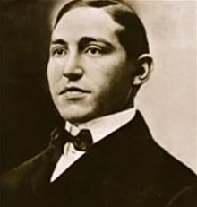
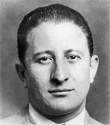

The"American Mafia "commonly referred to in North America as the Italian-American Mafia, the Mafia, or The Mob,is a highly organized Italian-American criminal society and organized crime group. The organization is often referred to by its members as Cosa Nostra (Italian pronunciation:"our thing" or “this thing of ours”) and by the American government as La Cosa Nostra (LCN). The organization's name is derived from the original Mafia or Cosa nostra, the Sicilian Mafia, with "American Mafia" originally referring simply to Mafia (or Cosa nostra) groups from Sicily operating in the United States, as the organization initially emerged as an American offshoot of the Sicilian Mafia (known also as Cosa nostra by its members) formed by Italian immigrants to the United States. However, the organization gradually evolved into a separate entity partially independent of the original Mafia in Sicily, and it eventually encompassed or absorbed other Italian immigrant and Italian-American gangsters and Italian-American crime groups (such as the American Camorra) active in the United States and Canada that were not of Sicilian origin. In North America, it is often colloquially referred to as the Italian Mafia or Italian Mob, though these terms may also apply to the separate yet related Sicilian Mafia or other organized crime groups in Italy or ethnic Italian crime groups in other countries.
The Mafia in the United States emerged in impoverished Italian immigrant neighborhoods or ghettos in New York's East Harlem (or Italian Harlem), the Lower East Side, and Brooklyn; also emerging in other areas of the East Coast of the United States and several other major metropolitan areas (such as New Orleans and Chicago) during the late 19th century and early 20th century, following waves of Italian immigration especially from Sicily and other regions of Southern Italy. It has its roots in the Sicilian Mafia but is a separate organization in the United States. Campanian, Calabrian and other Italian criminal groups in the U.S., as well as independent Italian-American criminals, eventually merged with Sicilian Mafiosi to create the modern pan-Italian Mafia in North America. Today, the American Mafia cooperates in various criminal activities with Italian organized crime groups, such as the Sicilian Mafia, the Camorra of Campania and the 'Ndrangheta of Calabria. The most important unit of the American Mafia is that of a "family," as the various criminal organizations that make up the Mafia are known. Despite the name of "family" to describe the various units, they are not familial groupings
The Mafia is currently most active in the Northeastern United States, with the heaviest activity in New York, Philadelphia, New Jersey, Buffalo, and New England, and in areas such as Boston, Providence and Hartford. It also remains heavily active in Chicago and has a significant and powerful presence in other Midwestern metropolitan areas such as Kansas City, Detroit, Pittsburgh, Milwaukee, Cleveland, and St. Louis. Outside of these areas, the Mafia is also very active in Florida, Las Vegas, and Los Angeles. Mafia families have previously existed to a greater extent and continue to exist to a lesser extent in Northeastern Pennsylvania, Dallas, Denver, New Orleans, Rochester, San Francisco, San Jose, Seattle, and Tampa. While some of the regional crime families in these areas may no longer exist to the same extent as before, descendants have continued to engage in criminal operations, while consolidation has occurred in other areas, with rackets being controlled by more powerful crime families from nearby cities.At the Mafia's peak, there were at least 26 cities around the United States with Cosa Nostra families, with many more offshoots and associates in other cities. There are five main New York City Mafia families, known as the Five Families: the Gambino, Lucchese, Genovese, Bonanno and Colombo families. The Italian-American Mafia has long dominated organized crime in the United States. Each crime family has its own territory and operates independently, while nationwide coordination is overseen by the Commission, which consists of the bosses of each of the strongest families. Though the majority of the Mafia's activities are contained to the Northeastern United States and Chicago, they continue to dominate organized crime in the United States, despite the increasing numbers of other crime groups
History
Origins: The Black Hand
The first published account of what became the Mafia in the United States dates to the spring of 1869. The New Orleans Times reported that the city's Second District had become overrun by "well-known and notorious Sicilian murderers, counterfeiters and burglars, who, in the last month, have formed a sort of general co-partnership or stock company for the plunder and disturbance of the city." Emigration from southern Italy to the Americas was primarily to Brazil and Argentina, and New Orleans had a heavy volume of port traffic to and from both locales.
Mafia groups in the United States first became influential in the New York City area, gradually progressing from small neighborhood operations in poor Italian ghettos to citywide and eventually national organizations. The Black Hand was a name given to an extortion method used in Italian neighborhoods at the turn of the 20th century. It has been sometimes mistaken for the Mafia itself, which it is not. The Black Hand was a criminal society, but there were many small Black Hand gangs. Black Hand extortion was often (wrongly) viewed as the activity of a single organization because Black Hand criminals in Italian communities throughout the United States used the same methods of extortion.
Giuseppe Morello was the first known Mafia member to emigrate to the United States. He and six other Sicilians fled to New York after murdering eleven wealthy landowners, the chancellor and a vice chancellor of a Sicilian province.He was arrested in New Orleans in 1881 and extradited to Italy.
From the 1890s to 1920 in New York City the Five Points Gang, founded by Paul Kelly, were very powerful in the Little Italy of the Lower East Side. Kelly recruited some street hoodlums who later became some of the most famous crime bosses of the century such as Johnny Torrio, Al Capone, Lucky Luciano and Frankie Yale. They were often in conflict with the Jewish Eastmans of the same area. There was also an influential Mafia family in East Harlem. The Neapolitan Camorra was also very active in Brooklyn. In Chicago, the 19th Ward was an Italian neighborhood that became known as the "Bloody Nineteenth" due to the frequent violence in the ward, mostly as a result of Mafia activity, feuds, and vendettas.
New Orleans was also the site of the first possible Mafia incident in the United States that received both national and international attention. On October 15, 1890, New Orleans Police Superintendent David Hennessy was murdered execution-style. It is still unclear whether Italian immigrants actually killed him, or whether it was a frame-up by nativists against the reviled underclass immigrants. Hundreds of Sicilians were arrested on mostly baseless charges, and nineteen were eventually indicted for the murder. An acquittal followed, with rumors of bribed and intimidated witnesses. On March 14, 1891, the outraged citizens of New Orleans organized a lynch mob after the acquittal, and proceeded to kill eleven of the nineteen defendants. Two were hanged, nine were shot, and the remaining eight escaped.
On January 16, 1919, prohibition began in the United States with the 18th Amendment to the United States Constitution making it illegal to manufacture, transport, or sell alcohol. Despite these bans, there was still a very high demand for it from the public. This created an atmosphere that tolerated crime as a means to provide liquor to the public, even among the police and city politicians. While not explicitly related to Mafia involvement, the murder rate during the Prohibition era rose over 40% — from 6.8 per 100,000 individuals to 9.7 — and within the first three months proceeding the Eighteenth Amendment, a half-million dollars in bonded whiskey was stolen from government warehouses. The profits that could be made from selling and distributing alcohol were worth the risk of punishment from the government, which had a difficult time enforcing prohibition. There were over 900,000 cases of liquor shipped to the borders of U.S. cities. Criminal gangs and politicians saw the opportunity to make fortunes and began shipping larger quantities of alcohol to U.S. cities. The majority of the alcohol was imported from Canada,the Caribbean, and the American Midwest where stills manufactured illegal alcohol.
In the early 1920s, fascist Benito Mussolini took control of Italy and waves of Italian immigrants fled to the United States. Sicilian Mafia members also fled to the United States, as Mussolini cracked down on Mafia activities in Italy.Most Italian immigrants resided in tenement buildings. As a way to escape the poor lifestyle, some Italian immigrants chose to join the American Mafia.
The Mafia took advantage of prohibition and began selling illegal alcohol. The profits from bootlegging far exceeded the traditional crimes of protection, extortion, gambling, and prostitution. Prohibition allowed Mafia families to make fortunes. As prohibition continued, victorious factions went on to dominate organized crime in their respective cities, setting up the family structure of each city. The bootlegging industry organized members of these gangs before they were distinguished as today's known families. The new industry required members at all different employment levels, such as bosses, lawyers, truckers, and even members to eliminate competitors through threat/force. Gangs hijacked each other's alcohol shipments, forcing rivals to pay them for "protection" to leave their operations alone, and armed guards almost invariably accompanied the caravans that delivered the liquor.
In the 1920s, Italian Mafia families began waging wars for absolute control over lucrative bootlegging rackets. As the violence erupted, Italians fought Irish and Jewish ethnic gangs for control of bootlegging in their respective territories. In New York City, Frankie Yale waged war with the Irish American White Hand Gang. In Chicago, Al Capone and his family massacred the North Side Gang, another Irish American outfit.[24][28] In New York City, by the end of the 1920s, two factions of organized crime had emerged to fight for control of the criminal underworld — one led by Joe Masseria and the other by Salvatore Maranzano. This caused the Castellammarese War, which led to Masseria's murder in 1931. Maranzano then divided New York City into five families. Maranzano, the first leader of the American Mafia, established the code of conduct for the organization, set up the "family" divisions and structure, and established procedures for resolving disputes. In an unprecedented move, Maranzano set himself up as boss of all bosses and required all families to pay tribute to him. This new role was received negatively, and Maranzano was murdered within six months on the orders of Charles "Lucky" Luciano. Luciano was a former Masseria underling who had switched sides to Maranzano and orchestrated the killing of Masseria
As an alternative to the previous despotic Mafia practice of naming a single Mafia boss as capo di tutti capi, or "boss of all bosses," Luciano created The Commission in 1931,[10] where the bosses of the most powerful families would have equal say and vote on important matters and solve disputes between families. This group ruled over the National Crime Syndicate and brought in an era of peace and prosperity for the American Mafia By mid-century, there were 26 official Commission-sanctioned Mafia crime families, each based in a different city (except for the Five Families which were all based in New York). Each family operated independently from the others and generally had exclusive territory it controlled. As opposed to the older generation of "Mustache Petes" such as Maranzano and Masseria, who usually worked only with fellow Italians, the "Young Turks" led by Luciano were more open to working with other groups, most notably the Jewish-American criminal syndicates to achieve greater profits. The Mafia thrived by following a strict set of rules that originated in Sicily that called for an organized hierarchical structure and a code of silence that forbade its members from cooperating with the police (Omertà). Failure to follow any of these rules was punishable by death.
The rise of power that the Mafia acquired during prohibition would continue long after alcohol was made legal again. Criminal empires which had expanded on bootleg money would find other avenues to continue making large sums of money. When alcohol ceased to be prohibited in 1933, the Mafia diversified its money-making criminal activities to include (both old and new): illegal gambling operations, loan sharking, extortion, protection rackets, drug trafficking, fencing, and labor racketeering through control of labor unions. In the mid-20th century, the Mafia was reputed to have infiltrated many labor unions in the United States, most notably the Teamsters and International Longshoremen's Association. This allowed crime families to make inroads into very profitable legitimate businesses such as construction, demolition, waste management, trucking, and in the waterfront and garment industry. In addition they could raid the unions' health and pension funds, extort businesses with threats of a workers' strike and participate in bid rigging. In New York City, most construction projects could not be performed without the Five Families' approval. In the port and loading dock industries, the Mafia bribed union members to tip them off to valuable items being brought in. Mobsters would then steal these products and fence the stolen merchandise.
Meyer Lansky made inroads into the casino industry in Cuba during the 1930s while the Mafia was already involved in exporting Cuban sugar and rum. When his friend Fulgencio Batista became president of Cuba in 1952, several Mafia bosses were able to make legitimate investments in legalized casinos. One estimate of the number of casinos mobsters owned was no less than 19. However, when Batista was overthrown following the Cuban Revolution, his successor Fidel Castro banned U.S. investment in the country, putting an end to the Mafia's presence in Cuba. Las Vegas was seen as an "open city" where any family can work. Once Nevada legalized gambling, mobsters were quick to take advantage and the casino industry became very popular in Las Vegas. Since the 1940s, Mafia families from New York, Cleveland, Kansas City, Milwaukee and Chicago had interests in Las Vegas casinos. They got loans from the Teamsters' pension fund, a union they effectively controlled, and used legitimate front men to build casinos. When money came into the counting room, hired men skimmed cash before it was recorded, then delivered it to their respective bosses. This money went unrecorded, but the amount is estimated to be in the hundreds of millions of dollars.
Operating in the shadows, the Mafia faced little opposition from law enforcement. Local law enforcement agencies did not have the resources or knowledge to effectively combat organized crime committed by a secret society they were unaware existed. Many people within police forces and courts were simply bribed, while witness intimidation was also common. In 1951, a U.S. Senate committee called the Kefauver Hearings determined that a "sinister criminal organization" known as the Mafia operated in the nation. Many suspected mobsters were subpoenaed for questioning, but few testified and none gave any meaningful information. In 1957, New York State Police uncovered a meeting and arrested major figures from around the country in Apalachin, New York. The event (dubbed the "Apalachin Meeting") forced the FBI to recognize organized crime as a serious problem in the United States and changed the way law enforcement investigated it. In 1963, Joe Valachi became the first Mafia member to turn state's evidence, and provided detailed information of its inner workings and secrets. More importantly, he revealed the Mafia's existence to the law, which enabled the Federal Bureau of Investigation to begin an aggressive assault on the Mafia's National Crime Syndicate.[36] Following Valachi's testimony, the Mafia could no longer operate completely in the shadows. The FBI put a lot more effort and resources into organized crime activities nationwide and created the Organized Crime Strike Force in various cities. However, while all this created more pressure on the Mafia, it did little to curb their criminal activities. Success was made by the beginning of the 1980s, when the FBI was able to rid Las Vegas casinos of Mafia control and made a determined effort to loosen the Mafia's stronghold on labor unions.
Mafia involvement in the US economy
By the late 1970s, the Mafia were involved in many industries, including betting on college sports. Several Mafia members associated with the Lucchese crime family participated in a point shaving scandal involving the Boston College basketball team. Rick Kuhn, Henry Hill, and others associated with the Lucchese crime family, manipulated the results of the games during the 1978–1979 basketball season. Through bribing and intimidating several members of the team, they ensured their bets on the point spread of each game would go in their favor.
One of the most lucrative gains for the Mafia was through gas-tax fraud. They created schemes to keep the money that they owed in taxes after the sale of millions of dollars' worth of wholesale petroleum. This allowed them to sell more gasoline at even lower prices. Michael Franzese, also known as the Yuppie Don, ran and organized a gas scandal and stole over $290 million in gasoline taxes by evading the Internal Revenue Service (IRS) and shutting down the gas station before government officials could make him pay what he owed. Franzese was caught in 1985.
Labor racketeering helped the Mafia control many industries from a macroeconomic scale. This tactic helped them grow in power and influence in many cities with big labor unions such as New York, Philadelphia, Chicago, Detroit and many others. Many members of the Mafia were enlisted in unions and even became union executives. La Cosa Nostra was a Mafia group that rose to economic power through their heavy involvement in unions. The Mafia has controlled unions all over the U.S. to extort money and resources out of big business, with recent indictments of corruption involving the New Jersey Waterfront Union, the Concrete Workers Union, and the teamster union.
Restaurants were yet another powerful means by which the Mafia could gain economic power. A large concentration of Mafia-owned restaurants was in New York City. Not only were they the setting of many killings and important meetings, but they were also an effective means of smuggling drugs and other illegal goods. From 1985 to 1987, Sicilian Mafiosi in the U.S. imported an estimated $1.65 billion worth of heroin through pizzerias, hiding the cargo in various food products
Another one of the areas of the economy that the Mafia was most influential was Las Vegas, Nevada, beginning just after World War II with the opening of the first gambling resort "The Flamingo".Many credit the Mafia with being a big part of the city's development in the mid-20th century,as millions of dollars in capital flowing into new casino resorts laid the foundation for further economic growth. This capital didn't come from one Mafia family alone, but many throughout the country seeking to gain even more power and wealth. Large profits from casinos, run as legitimate businesses, would help to finance many of the illegal activities of the Mafia from the 1950s into the 1980s. In the 1950s more Mafia-financed casinos were constructed, such as the Stardust, Sahara, Tropicana, Desert Inn, and Riviera. Tourism in the city greatly increased through the 1960s and strengthened the local economy.
However, the 1960s was also when the Mafia's influence in the Las Vegas economy began to dwindle. The Nevada State government and Federal government had been working to weaken Mafia activity on the Strip. In 1969, the Nevada State Legislature passed a law that made it easier for corporations to own casinos. This brought new investors to the local economy to buy casinos from the Mafia. The U.S. Congress passed the RICO Act a year later. This law gave more authority to law enforcement to pursue the Mafia for its illegal activities. There was a sharp decline in mob involvement in Las Vegas in the 1980s. Through the RICO law, many in the Mafia were convicted and imprisoned
RICO Act
When the Racketeer Influenced and Corrupt Organizations Act (RICO Act) became federal law in 1970, it became a highly effective tool in prosecuting mobsters. It provides for extended criminal penalties for acts performed as part of an ongoing criminal organization. Violation of the act is punishable by up to 20 years in prison per count, up to $25,000 in fines, and the violator must forfeit all properties attained while violating the RICO Act. The RICO Act has proven to be a very powerful weapon because it attacks the entire corrupt entity instead of individuals who can easily be replaced with other organized crime members.[10] Between 1981 and 1992, 23 bosses from around the country were convicted under the law while between 1981 and 1988, 13 underbosses and 43 captains were convicted.Over 1,000 crime family figures were convicted by 1990. While this significantly crippled many Mafia families around the country, the most powerful families continued to dominate crime in their territories, even if the new laws put more mobsters in jail and made it harder to operate.
A high-profile RICO case sentenced John Gotti and Frank Locascio to life in prison in 1992, with the help of informant Sammy Gravano in exchange for immunity from prosecution for his crimes.Aside from avoiding long prison stretches, the FBI could put mobsters in the United States Federal Witness Protection Program, changing their identities and supporting them financially for life. This led to dozens of mobsters testifying and providing information during the 1990s, which led to the imprisonment of hundreds of mobsters. As a result, the Mafia has seen a major decline in its power and influence in organized crime since the 1990s.
On January 9, 2003, Bonanno crime family boss Joseph Massino was arrested and indicted, alongside Salvatore Vitale, Frank Lino and capo Daniel Mongelli, in a comprehensive racketeering indictment. The charges against Massino himself included ordering the 1981 murder of Dominick "Sonny Black" Napolitano.[49][50] Massino's trial began on May 24, 2004, with judge Nicholas Garaufis presiding and Greg D. Andres and Robert Henoch heading the prosecution. He now faced 11 RICO counts for seven murders (due to the prospect of prosecutors seeking the death penalty for the Sciascia murder, that case was severed to be tried separately), arson, extortion, loansharking, illegal gambling, and money laundering.After deliberating for five days, the jury found Massino guilty of all 11 counts on July 30, 2004. His sentencing was initially scheduled for October 12, and he was expected to receive a sentence of life imprisonment with no possibility of parole. The jury also approved the prosecutors' recommended $10 million forfeiture of the proceeds of his reign as Bonanno boss on the day of the verdict
Immediately after his July 30 conviction, as court was adjourned, Massino requested a meeting with Judge Garaufis, where he made his first offer to cooperate. He did so in hopes of sparing his life; he was facing the death penalty if found guilty of Sciascia's murder. Indeed, one of John Ashcroft's final acts as Attorney General was to order federal prosecutors to seek the death penalty for Massino. Massino thus stood to be the first Mafia boss to be executed for his crimes, and the first mob boss to face the death penalty since Lepke Buchalter was executed in 1944. Massino was the first sitting boss of a New York crime family to turn state's evidence, and the second in the history of the American Mafia to do so[58] (Philadelphia crime family boss Ralph Natale had flipped in 1999 when facing drug charges, though Natale was mostly a “front” boss while the real boss of the Philadelphia Mafia used Natale as a diversion for authorities.
In the 21st century, the Mafia has continued to be involved in a broad spectrum of illegal activities. These include murder, extortion, corruption of public officials, gambling, infiltration of legitimate businesses, labor racketeering, loan sharking, tax fraud schemes and stock manipulation schemes. Another factor contributing to the Mafia's downfall is the assimilation of Italian Americans, which left a shallower recruitment pool of new mobsters. Although the Mafia used to be nationwide, today most of its activities are confined to the Northeast and Chicago.While other criminal organizations such as the Russian Mafia, Chinese Triads, Mexican drug cartels and others have all grabbed a share of criminal activities, the Mafia continues to be the dominant criminal organization in these regions, partly due to its strict hierarchical structure. Law enforcement is concerned with the possible resurgence of the Mafia as it regroups from the turmoil of the 1990s, although FBI and local law enforcement agencies now focus more on homeland security and less on organized crime since the September 11 attacks. To avoid FBI attention and prosecution, the modern Mafia also outsources a lot of its work to other criminal groups, such as motorcycle gangs
Scructure
The American Mafia operates on a strict hierarchical structure. While similar to its Sicilian origins, the American Mafia's modern organizational structure was created by Salvatore Maranzano in 1931. He created the Five Families, each of which would have a boss, underboss, capos, soldiers—all only full-blooded Italian Americans—while associates could come from any background. All inducted members of the Mafia are called "made" men. This signifies that they are untouchable in the criminal underworld and any harm brought to them will be met with retaliation. With the exception of associates, all mobsters within the Mafia are "made" official members of a crime family. The three highest positions make up the administration. Below the administration, there are factions each headed by a caporegime (captain), who leads a crew of soldiers and associates. They report to the administration and can be seen as equivalent to managers in a business. When a boss makes a decision, he rarely issues orders directly to workers who would carry it out but instead passes instructions down through the chain of command. This way, the higher levels of the organization are insulated from law enforcement attention if the lower level members who actually commit the crime should be captured or investigated, providing plausible deniability.
There are occasionally other positions in the family leadership. Frequently, ruling panels have been set up when a boss goes to jail to divide the responsibility of the family (these usually consist of three or five members). This also helps divert police attention from any one member. The family messenger and street boss were positions created by former Genovese family leader Vincent Gigante.
Boss – The boss is the head of the family, usually reigning as a dictator, sometimes called the Don or "Godfather". The boss receives a cut of every operation. Operations are taken on by every member of the family and of the region's occupying family. Depending on the family, the boss may be chosen by a vote from the caporegimes of the family. In the event of a tie, the underboss must vote. In the past, all the members of a family voted on the boss, but by the late 1950s, any gathering such as that usually attracted too much attention. In practice, many of these elections are seen as having an inevitable result, such as that of John Gotti in 1986. According to Sammy Gravano, a meeting was held in a basement during which all capos were searched and Gotti's men stood ominously behind them. Gotti was then proclaimed boss.
Underboss – The underboss, usually appointed by the boss, is the second in command of the family. The underboss often runs the day-to-day responsibilities of the family or oversees its most lucrative rackets. He usually gets a percentage of the family's income from the boss's cut. The underboss is usually first in line to become acting boss if the boss is imprisoned, and is also frequently seen as a logical successor.
Consigliere – The consigliere is an advisor to the family and sometimes seen as the boss's "right-hand man". He is used as a mediator of disputes and often acts as a representative or aide for the family in meetings with other families, rival criminal organizations, and important business associates. In practice, the consigliere is normally the third-ranking member of the administration of a family and was traditionally a senior member carrying the utmost respect of the family and deeply familiar with the inner-workings of the organization. A boss will often appoint a trusted close friend or personal advisor as his official consigliere.
Caporegime (or capo) – A caporegime (also captain or skipper) is in charge of a crew, a group of soldiers who report directly to him. Each crew usually contains 10–20 soldiers and many more associates. A capo is appointed by the boss and reports to him or the underboss. A captain gives a percentage of his (and his underlings') earnings to the boss and is also responsible for any tasks assigned, including murder. In labor racketeering, it is usually a capo who controls the infiltration of union locals. If a capo becomes powerful enough, he can sometimes wield more power than some of his superiors. In cases like Anthony Corallo they might even bypass the normal Mafia structure and lead the family when the boss dies.
Soldier (Soldato in Italian) – A soldato or “soldier” is an inducted (or “made”) member of the Mafia in general and an inducted member of a particular Mafia crime family, and traditionally they can only be of full Italian background (although today many families require men to be of only half Italian descent, on their father's side). Once a member is made he is untouchable, meaning permission from a soldier's boss must be given before he is murdered. When the books are open, meaning that a family is accepting new members, a made man may recommend an up-and-coming associate to be a new soldier. Soldiers are the main workers of the family, usually committing crimes like assault, murder, extortion, intimidation, etc. In return, they are given profitable rackets to run by their superiors and have full access to their family's connections and power.
Associate – An associate is not a member of the Mafia, but works for a crime family nonetheless. Associates can include a wide range of people who work for the family. An associate can have a wide range of duties, from virtually carrying out the same duties as a soldier to being a simple errand boy. This is where prospective mobsters ("connected guys") start out to prove their worth. Once a crime family is accepting new members, the best associates of Italian descent are evaluated and picked to become soldiers. An associate can also be a criminal who serves as a go-between in criminal transactions or sometimes deals in drugs to keep police attention off the actual members, or they can simply be people the family does business with (restaurant owners, etc.) In other cases, an associate might be a corrupt labor union delegate or businessman.[67] Non-Italians will never go any further than this, although many non-Italian associates of the Mafia, such as Meyer Lansky, Bugsy Siegel, Murray Humphreys, Mickey Cohen, Gus Alex, Bumpy Johnson, Frank Sheeran, Jimmy Hoffa, Jake Guzik, Gerard Ouimette, and James Burke, wielded extreme power within their respective crime families and carried the respect of actual Mafia members.
Rituals and customs
The Mafia initiation ritual to become a made man in the Mafia emerged from various sources, such as Roman Catholic confraternities and Masonic Lodges in mid-19th century Sicily. At the initiation ceremony, the inductee would have his finger pricked with a needle by the officiating member; a few drops of blood are spilled on a card bearing the likeness of a saint; the card is set on fire; finally, while the card is passed rapidly from hand to hand to avoid burns, the novice takes an oath of loyalty to the Mafia family. The oath of loyalty to the Mafia Family is called the Omerta. This was confirmed in 1986 by the pentito Tommaso Buscetta
A hit, or murder, of a made man must be approved by the leadership of his family, or retaliatory hits would be made, possibly inciting a war. In a state of war, families would "go to the mattresses"—means to prepare for a war or be prepared in a war-like stance. It was mainly derived from the film, "The Godfather" as the origin of the phrase, is unknown. Omertà is a key oath or code of silence in the Mafia that places importance on silence in the face of questioning by authorities or outsiders; non-cooperation with authorities, the government, or outsiders. Traditionally, to become a made man, or full member of the Mafia, the inductee was required to be a male of full Sicilian descent, later extended to males of full Italian descent, and later further extended to males of half-Italian descent through their father's lineage.According to Salvatore Vitale, it was decided during a Commission meeting in 2000 to restore the rule requiring both parents to be of Italian descent. It is also common for a Mafia member to have a mistress.[76] Traditionally, made members were also not allowed to have mustaches—part of the Mustache Pete custom. Homosexuality is reportedly incompatible with the American Mafia code of conduct. In 1992, John D'Amato, acting boss of the DeCavalcante family, was killed when he was suspected of engaging in homosexual activity
List of Mafia families
The following is a list of Mafia families that have been active in the U.S. Note that some families have members and associates working in other regions as well. The organization is not limited to these regions. The Bonanno crime family and the Buffalo crime family also had influence in several factions in Canada including the Rizzuto crime family and Cotroni crime family, and the Luppino crime family and Papalia crime family, respectively.
U.S. Naval Intelligence entered into an agreement with Lucky Luciano to gain his assistance in keeping the New York waterfront free from saboteurs after the destruction of the SS Normandie.[86] This spectacular disaster convinced both sides to talk seriously about protecting the United States' East Coast on the afternoon of February 9, 1942. While it was in the process of being converted into a troopship, the luxury ocean liner, SS Normandie, mysteriously burst into flames with 1,500 sailors and civilians on board. All but one escaped, but 128 were injured and by the next day the ship was a smoking hull. In his report, twelve years later, William B. Herlands, Commissioner of Investigation, made the case for the U.S. government talking to top criminals, stating "The Intelligence authorities were greatly concerned with the problems of sabotage and espionage…Suspicions were rife with respect to the leaking of information about convoy movements. The Normandie, which was being converted to war use as the Navy auxiliary Lafayette, had burned at the pier in the North River, New York City. Sabotage was suspected.
lots to assassinate Fidel Castro
In August 1960, Colonel Sheffield Edwards, director of the Office of Security of the Central Intelligence Agency (CIA), proposed the assassination of Cuban head of state Fidel Castro by Mafia assassins. Between August 1960 and April 1961, the CIA, with the help of the Mafia, pursued a series of plots to poison or shoot Castro. Those allegedly involved included Sam Giancana, Carlos Marcello, Santo Trafficante Jr., and John Roselli
Recovery of murdered Mississippi civil rights workers
In 2007, Linda Schiro testified in an unrelated court case that her late boyfriend, Gregory Scarpa, a capo in the Colombo family, had been recruited by the FBI to help find the bodies of three civil rights workers who had been murdered in Mississippi in 1964 by the Ku Klux Klan. She said that she had been with Scarpa in Mississippi at the time and had witnessed him being given a gun, and later a cash payment, by FBI agents. She testified that Scarpa had threatened a Klansman by placing a gun in the Klansman's mouth, forcing the Klansman to reveal the location of the bodies. Similar stories of Mafia involvement in recovering the bodies had been circulating for years, and had been previously published in the New York Daily News, but had never before been introduced in court
Law enforcement and the Mafia
In several Mafia families, killing a state authority is forbidden due to the possibility of extreme police retaliation. In some rare strict cases, conspiring to commit such a murder is punishable by death. Jewish mobster and Mafia associate Dutch Schultz was reportedly killed by his Italian peers out of fear that he would carry out a plan to kill New York City prosecutor Thomas Dewey and thus bring unprecedented police attention to the Mafia. However, the Mafia has carried out hits on law enforcement, especially in its earlier history. New York police officer Joe Petrosino was shot by Sicilian mobsters while on duty in Sicily. A statue of him was later erected across the street from a Lucchese hangout.
Kefauver Committee
In 1951, a U.S. Senate special committee, chaired by Democratic Tennessee Senator Estes Kefauver, determined that a "sinister criminal organization" known as the Mafia operated around the United States. The United States Senate Special Committee to Investigate Crime in Interstate Commerce (known as the "Kefauver Hearings"), televised nationwide, captured the attention of the American people and forced the FBI to recognize the existence of organized crime. In 1953, the FBI initiated the "Top Hoodlum Program". The purpose of the program was to have agents collect information on the mobsters in their territories and report it regularly to Washington to maintain a centralized collection of intelligence on racketeers.
Apalachin Meeting
The Apalachin meeting was a historic summit of the American Mafia held at the home of mobster Joseph "Joe the Barber" Barbara, at 625 McFall Road in Apalachin, New York, on November 14, 1957.[94][95][96][97][98][99][100][101] Allegedly, the meeting was held to discuss various topics including loansharking, narcotics trafficking, and gambling, along with dividing the illegal operations controlled by the recently murdered Albert Anastasia.[102][103] An estimated 100 Mafiosi from the United States, Italy, and Cuba are thought to have attended this meeting.[103] Immediately after the Anastasia murder that October, and after taking control of the Luciano crime family, renamed the Genovese crime family, from Frank Costello, Vito Genovese wanted to legitimize his new power by holding a national Cosa Nostra meeting. As a result of the Apalachin meeting, the membership books to become a made man in the mob were closed, and were not reopened until 1976.Local and state law enforcement became suspicious when numerous expensive cars bearing license plates from around the country arrived in what was described as "the sleepy hamlet of Apalachin".[105] After setting up roadblocks, the police raided the meeting, causing many of the participants to flee into the woods and area surrounding the Barbara estate. More than 60 underworld bosses were detained and indicted following the raid. Twenty of those who attended the meeting were charged with "Conspiring to obstruct justice by lying about the nature of the underworld meeting" and found guilty in January 1959. All were fined, up to $10,000 each, and given prison sentences ranging from three to five years. All the convictions were overturned on appeal the following year.[why?] One of the most direct and significant outcomes of the Apalachin Meeting was that it helped to confirm the existence of a nationwide criminal conspiracy, a fact that some, including Federal Bureau of Investigation director J. Edgar Hoover, had long refused to acknowledge
Commission Trial
As part of the Mafia Commission Trial, on February 25, 1985, nine New York Mafia leaders were indicted for narcotics trafficking, loansharking, gambling, labor racketeering and extortion against construction companies under the Racketeer Influenced and Corrupt Organizations Act.[120] On July 1, 1985, the original nine men, with the addition of two more New York Mafia leaders, pleaded not guilty to a second set of racketeering charges as part of the trial. Prosecutors aimed to strike at all the crime families at once using their involvement in the Commission.[121] On December 2, 1985, Gambino family underboss Neil Dellacroce died of cancer.[122] Gambino boss and de facto commission head Paul Castellano was later murdered on December 16, 1985.In the early 1980s, the Bonanno family were kicked off the Commission due to the Donnie Brasco infiltration, and although Rastelli was one of the men initially indicted, this removal from the Commission actually allowed Rastelli to be removed from the Commission Trial as he was later indicted on separate labor racketeering charges. Having previously lost their seat on the Commission, the Bonannos suffered less exposure than the other families in this case.Eight defendants were convicted of racketeer ing on November 19, 1986,with the exception of Indelicato who was convicted of murder, and were sentenced on January 13, 1987, as follows:In the early 1990s, as the Colombo crime family war raged, the Commission refused to allow any Colombo member to sit on the Commission and considered dissolving the family.